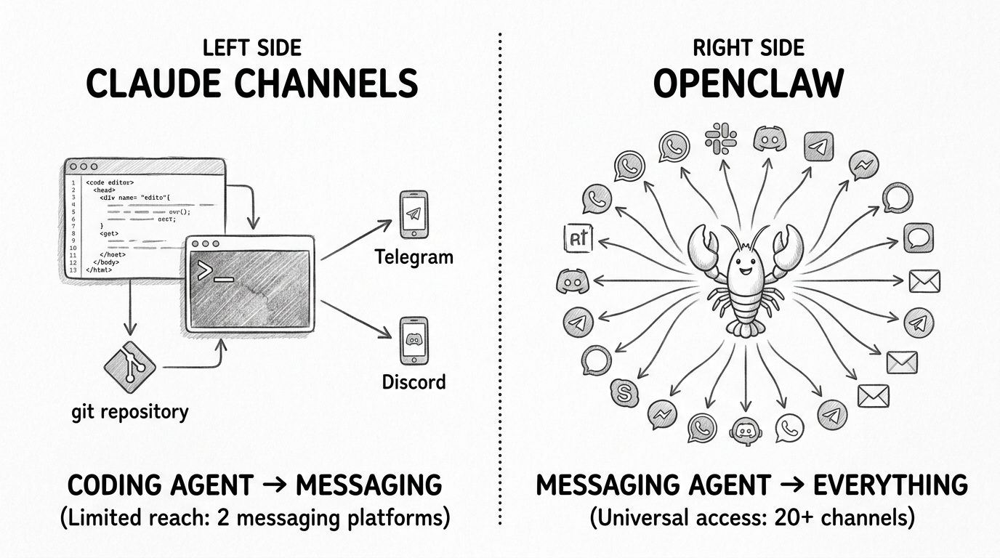
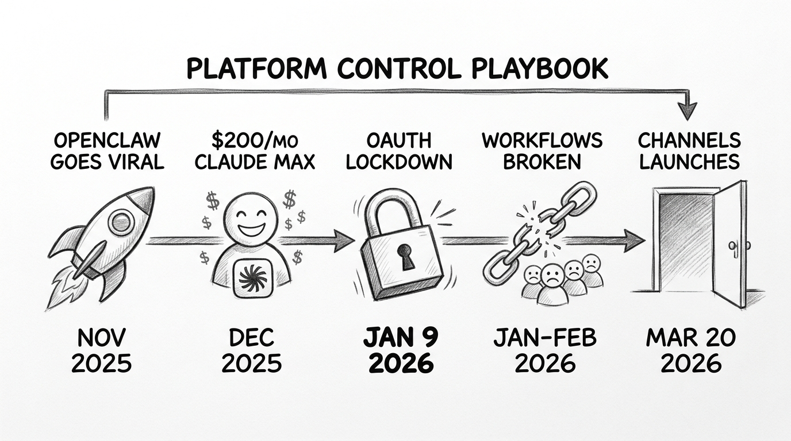
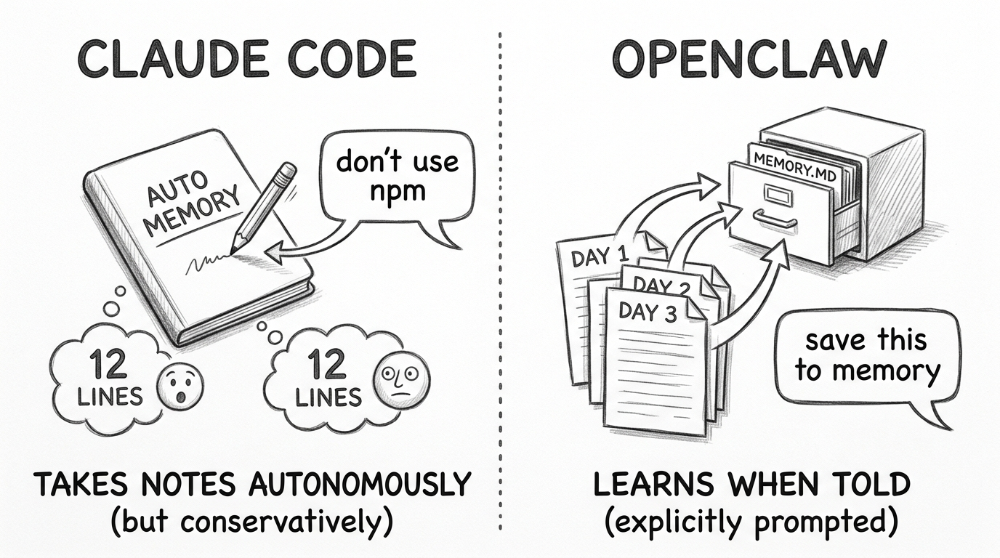
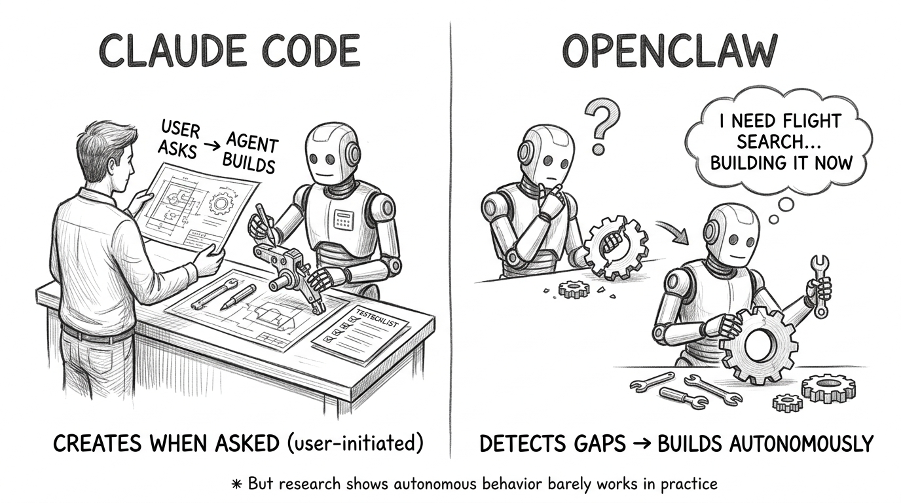
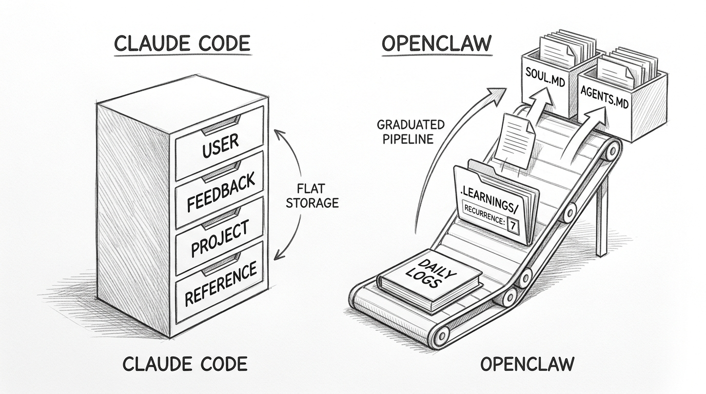
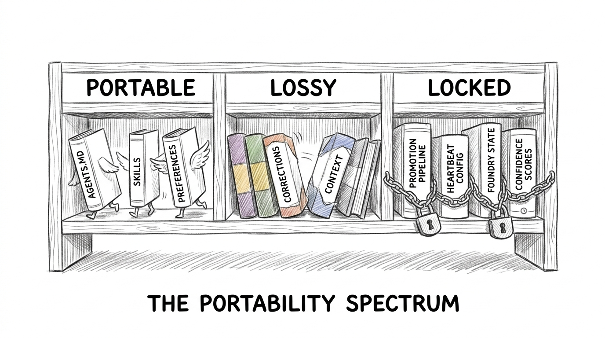
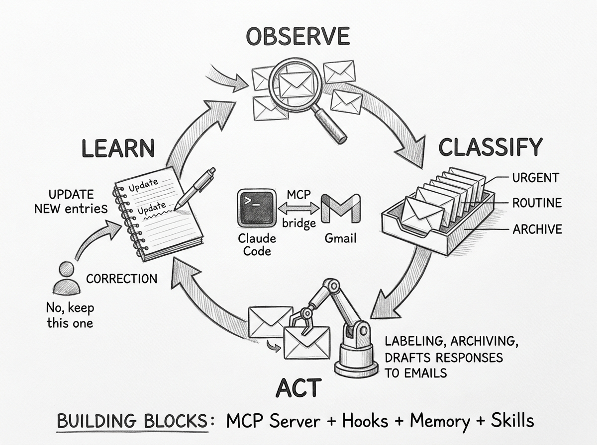

They Called It an OpenClaw Killer. Here\
They Called It an OpenClaw Killer. Here's What Actually Happened.
"Anthropic just shipped an OpenClaw killer." That was VentureBeat's headline on March 20, 2026 — the day Claude Code Channels launched. Telegram and Discord integration for your AI coding agent. The tech press ran with the framing. Twitter lit up with hot takes.
One product has 100,000 GitHub stars and 20+ messaging platform integrations. The other is a research preview with two platforms. One has been in production since November 2025. The other launched today. Calling this a "killer" is like reviewing a concept car against a shipping fleet.
But the real story is stranger and more important than any feature comparison. It involves a silent lockdown, a platform control playbook, and a fundamental question about what kind of AI agent you actually need.
Two Different Species
The first thing to understand: Claude Channels and OpenClaw are not competing products. They are different species solving different problems.

Claude Code Channels extends a coding agent into messaging. It's an MCP plugin that bridges your active Claude Code terminal session to Telegram or Discord. You message your bot from your phone, it runs code on your machine, and sends back the results. Close the terminal and the channel goes offline. It requires a Pro or Max plan ($20+/month) and only works with Claude models.
OpenClaw is a messaging-native personal AI agent. It runs as a persistent background daemon on your machine — always on, always listening. It connects to WhatsApp, Telegram, Slack, Discord, Signal, iMessage, Microsoft Teams, and a dozen more platforms simultaneously. It works with any LLM provider — Claude, GPT, Gemini, local models via Ollama. It's free and open-source (MIT license), created by Peter Steinberger, the founder of PSPDFKit.
The architectural difference is fundamental. Claude Channels takes a powerful coding specialist and gives it a messaging interface. OpenClaw takes a messaging-native agent and gives it whatever capabilities you install. Multiple credible comparison articles converge on the same phrasing: "Claude Code handles your codebase. OpenClaw handles your life."
GetAIPerks, DataCamp, and AnalyticsVidhya all independently concluded these products are complementary, not competing. The "killer" narrative serves headlines, not accuracy.
The Lockdown Nobody Talks About
The most important event in this comparison happened two months before Channels launched. And it wasn't a product announcement.

On January 9, 2026, Anthropic silently deployed server-side safeguards that blocked subscription OAuth tokens from working outside the official Claude Code CLI. No announcement. No blog post. No advance warning.
Thousands of OpenClaw users who had been routing through Claude Max subscriptions ($200/month) woke up to broken workflows. Cline, RooCode, and other IDE extensions that piggybacked on Claude subscription credentials also broke.
By February 17, Anthropic published updated Terms of Service making it explicit: using OAuth tokens from Claude Free, Pro, or Max accounts outside of Claude Code or claude.ai is now a violation.
The business rationale was straightforward. A Claude Max subscription at $200/month becomes deeply unprofitable when users route agentic workloads through third-party tools that remove built-in rate limits. Some users were burning through millions of tokens in a single afternoon. The lockdown was a financial necessity.
Then, six weeks later, Anthropic launched Channels — the "official" way to message your AI coding agent.
This is the classic platform playbook: let innovators prove the market, then capture it. OpenClaw validated the messaging-agent pattern. Anthropic watched, cut off the model access that made OpenClaw's Claude-dependent users viable, then shipped their own version of the experience.
OpenClaw's community pivoted. Some rebuilt on API keys (more expensive). Others switched to alternative models entirely — one user documented rebuilding their entire setup for $15/month with Kimi K2.5. The incident proved both the value and the vulnerability of model-agnostic architecture. If your best model can cut you off, "model-agnostic" is a risk management strategy, not just a feature.
How These Agents Get Better Over Time
Neither Claude Code nor OpenClaw "learns" in any machine learning sense. No weights change. No fine-tuning happens. But both get meaningfully better over weeks and months of daily use — through different mechanisms that are worth understanding precisely, because the differences shape what kind of long-term relationship you build with each tool.
Learning Your Habits

Claude Code takes notes autonomously. During a session, it watches what happens and independently decides what to save for future reference — build commands it discovers, debugging insights, code style patterns, corrections you make. Anthropic calls this "auto memory." It writes to markdown files on disk and loads them at the start of every future session.
The mechanism is real but conservative. One power user with 13 projects and months of daily use opened his auto memory and found exactly 12 lines. Claude captured a specific naming collision fix but missed the broader architectural context of why that convention existed. As Brent Peterson put it in a widely-circulated analysis: "Automatic Memory Is Not Learning." Auto memory captures the what, not the why.
When it works, the effect is concrete. A Reddit user reported that Claude kept making the same shadcn Select component error despite having a CLAUDE.md rule about it. After auto memory encountered the error once and recorded it, Claude never made the mistake again. The correction stuck where the rule didn't.
OpenClaw is less autonomous about habit capture — and this surprises people who assume the "self-improving agent" is always watching. The official docs are clear: "It helps to remind the model to store memories." The recommended practice is a trigger phrase: after correcting the agent, say "Please add this preference to your memory files for future sessions." Explicit beats implicit.
OpenClaw's habit learning comes from a different architecture. Daily conversation notes accumulate in timestamped log files. Today's and yesterday's logs load automatically at session start. Over time, the user (or a configured heartbeat task) promotes durable patterns from daily logs into MEMORY.md — a curated long-term knowledge base. One user described the result after 30 days: "It knows your schedule, pet peeves, and what 'the usual' means."
The heartbeat daemon — OpenClaw's proactive 30-minute check-in cycle — does not learn habits. It reads a static checklist (HEARTBEAT.md) and decides if anything needs attention. It's a scheduler, not a pattern observer. But when configured to review daily logs during its cycle, it can trigger memory promotion.
Building New Tools

This is where the two systems diverge most sharply.
Claude Code creates new skills only when asked. There is no mechanism for autonomous gap detection. You say "create a skill that reviews PRs for security issues," and Claude walks through a structured workflow — interviewing you about requirements, generating the SKILL.md file, running A/B benchmarks with subagents, iterating based on feedback. The result is a tested, documented skill. But Claude never decides on its own that it needs one.
The community has built workarounds. One popular pattern adds instructions to CLAUDE.md telling Claude to log discovered patterns to a .learnings/ directory, then periodically review and promote recurring patterns into permanent rules. Another runs a bash script over session logs to detect friction patterns and suggest CLAUDE.md updates. These work, but they require deliberate user configuration. The self-improvement is real — it's just user-initiated, not agent-initiated.
OpenClaw can genuinely detect missing capabilities and build tools mid-conversation without being explicitly asked. When a user asked for flight search, OpenClaw responded: "I don't currently have a flight search integration. I'm going to build a skill for this now." It connected to the Skyscanner API, tested endpoints, and delivered results — all within the same conversation. Another documented case: an agent autonomously navigated Google Cloud Console, configured OAuth credentials, and provisioned API access to complete a task it lacked tools for.
The Foundry meta-extension goes further. It silently observes workflow patterns, and when a pattern hits five or more successful uses with a 70% success rate, it crystallizes into a permanent tool — executable code that runs without LLM token cost. An hourly overseer prunes patterns unused for 30+ days.
But the research tells a more complicated story. The "Agents of Chaos" paper (Shapira et al., 2026) deployed OpenClaw agents in a live lab and found that "autonomous behavior mechanisms barely worked." Agents "readily default to requesting detailed instructions and inputs from their human operators" — even when explicitly configured for autonomy. The researchers concluded that "creating autonomous behavior with these agents is more similar to traditional programming than one might expect."
The honest picture: OpenClaw's tool-building capability is real and documented. But in practice, it fires most often during active conversations where the user's request triggers the gap detection — not during unattended background operation.
Managing Memory Over Time
Both systems face the same fundamental problem: more memory is not always better. Stale memories introduce contradictions. Overgrown context windows degrade model performance. The 200-line cap on Claude Code's MEMORY.md is an engineering admission of this tension.

Claude Code handles memory growth through a topic-file architecture. MEMORY.md serves as a concise index — pointers to separate topic files like debugging.md or api-conventions.md. Only MEMORY.md's first 200 lines load at session start. Topic files load on demand when Claude needs them. There is no automated garbage collection. Claude's docs recommend periodic manual review: "skim your memory files and delete outdated entries."
A community pattern called "dream consolidation" adds structure to this maintenance: inventory existing files, gather recent signals, merge near-duplicates, prune stale entries, and rebuild the index. But it runs manually — Claude has no background daemon to do this housekeeping.
OpenClaw uses a richer memory management stack. A pre-compaction flush mechanism triggers before context window limits are reached: the agent gets a 4,000-token runway to write durable memories to disk before conversation compression kicks in. This means insights from long sessions persist even when the conversation itself is summarized.
On top of this, OpenClaw runs a vector search layer — SQLite with the sqlite-vec extension, using hybrid retrieval (70% semantic similarity, 30% keyword matching) across all stored markdown files. As daily logs and session transcripts accumulate, the search corpus grows. The agent can recall relevant context from months ago, not just what's in the current session. In practice, this means an OpenClaw agent at week 20 finds relevant past decisions faster and more accurately than at week 1 — the search improves with corpus size, even without any active curation.
Where Knowledge Lives on Disk
Both systems store everything as human-readable files. No databases, no black boxes (though OpenClaw uses SQLite for its vector search index).
Claude Code stores learned knowledge in ~/.claude/projects/<project>/memory/:
memory/
├── MEMORY.md # Index file (≤200 lines, loaded every session)
├── feedback_testing.md # "Integration tests must hit real DB, not mocks"
├── user_role.md # "Senior Go engineer, new to React frontend"
├── project_tools.md # "Use bun, not npm. E2E tests use Playwright"
└── reference_apis.md # "Auth service docs at internal.wiki/auth"
Each file uses YAML frontmatter (name, description, type) plus a markdown body with Why and How to apply sections. The format is intentionally human-editable — you can open these files, fix mistakes, delete stale entries, and add new knowledge directly.
OpenClaw distributes knowledge across purpose-specific files in ~/clawd/:
~/clawd/
├── SOUL.md # Personality, tone, communication style
├── AGENTS.md # Behavior rules, workflows, routing
├── USER.md # User profile (name, timezone, preferences)
├── MEMORY.md # Long-term curated knowledge
├── HEARTBEAT.md # Scheduled task checklist
├── memory/
│ ├── 2026-03-22.md # Today's conversation notes
│ └── 2026-03-21.md # Yesterday's notes
└── skills/
└── flight-search/SKILL.md # Self-created skill
The structural difference reflects a philosophical one. Claude Code treats all knowledge as flat typed entries — every memory is equal, just categorized. OpenClaw treats knowledge as a graduated pipeline — daily observations flow upward through curation into permanent configuration, with different files serving different roles in the agent's identity.
What This Means in Practice
After a month of daily use, a Claude Code project accumulates a handful of precisely captured corrections and conventions. The agent stops making mistakes you've corrected once. It knows your build commands, your testing philosophy, and your coding style. The improvement is modest but reliable — like a colleague who takes good notes.
After a month of daily use, an OpenClaw agent has richer context — 30 days of searchable conversation logs, a curated MEMORY.md, possibly self-created skills for tasks you do often. The improvement is broader but requires more user investment — configuring memory protocols, reviewing accumulated notes, maintaining the file hierarchy. Like a personal assistant who gets better as you invest in training them.
Neither system is "self-improving" in the way that phrase implies. Both are configuration systems that accumulate context through a mix of autonomous observation and explicit user instruction. The compounding is real — but it comes from the user's investment, not from the agent's initiative.
The Portability Problem
Here's the question nobody in the "which is better" debate is asking: if you invest months building up an AI agent's knowledge about you, your codebase, and your workflows — can you take that knowledge with you if you switch tools?

The honest answer: partially.
Both systems use Markdown, which sounds like it should make migration straightforward. It doesn't. The file format is the easy part. The schemas, scoping models, loading semantics, and metadata structures are all different. Converting 47 atomic Claude Code memory files into sections of OpenClaw's monolithic SOUL.md and AGENTS.md requires editorial judgment about grouping, ordering, and deduplication. That's a human curation task, not a script — expect 2-4 hours for a moderately populated system.
Skills are the most portable layer. Both systems use SKILL.md files with YAML frontmatter and markdown body. The format is nearly identical. You can copy them with minimal adjustment.
Self-improvement knowledge is the least portable. OpenClaw's recurrence tracking (Pattern-Key, Recurrence-Count, First-Seen, Last-Seen) has no Claude Code equivalent. When you paste a learning with "Recurrence-Count: 12 across 6 tasks" into a flat Claude Code feedback memory, it becomes an undifferentiated text note. The knowledge transfers. The confidence calibration — how much the system should trust that knowledge — does not.
The most practical escape hatch bypasses both systems entirely: externalize your knowledge into tool-agnostic project files. AGENTS.md (adopted by 60,000+ repositories) is recognized by Cursor, Copilot, Gemini CLI, Cline, Aider, and both Claude Code and OpenClaw. If you put your conventions in AGENTS.md, your architecture in ARCHITECTURE.md, and your decisions in DECISIONS.md, you get portability for free — because every major AI coding tool already reads these files.
No universal standard for agent memory interchange exists yet. MIF (Memory Interchange Format) is the most rigorous attempt — a dual JSON-LD/Markdown format with bi-temporal tracking — but it's early stage. Memsearch, extracted from OpenClaw's codebase by Zilliz, is the most practical bridge today: a standalone Markdown-based memory library with a Claude Code plugin. But it's additive, not unifying — it runs alongside native memory, not instead of it.
Building a Specialized Agent: The Email Manager Example
Everything above is abstract comparison. Here's what it looks like in practice: building an autonomous email manager with Claude Code that learns from your behavior over time.

The architecture uses four Claude Code primitives working together:
MCP server connects Claude Code to Gmail's API — reading emails, applying labels, creating drafts, building filters. Several open-source Gmail MCP servers exist with 20+ tools covering the full API surface. You register the server once, and Claude Code gains email capabilities in every session.
Hooks automate the observation layer. A PostToolUse hook fires after every Gmail action, logging what was done — which email was labeled, what category was assigned. A PreToolUse hook on send_email adds a safety review before any outgoing message. A SessionStart hook loads your email preferences from memory at the beginning of every session.
Memory stores what the agent learns about you. After you correct a classification — "that newsletter is actually important to me" — the correction gets saved as a feedback memory with a Why (what was wrong) and How to apply (the rule going forward). Over sessions, the agent accumulates your VIP contacts, priority rules, and auto-archive patterns.
Skills define the triage procedure. A SKILL.md file teaches the agent the complete workflow: fetch unread emails, classify each one by priority and category, assign a confidence score, auto-execute high-confidence actions, ask about medium-confidence ones, and flag anything uncertain. The skill also defines the learning loop — when you correct a classification, the agent updates its memory files and proposes a permanent Gmail filter after three corrections of the same pattern.
The learning loop runs like this: Session 1, the agent classifies 10 emails with mixed accuracy. You correct two — "GitHub PR reviews are important, cold outreach isn't." Session 5, those corrections are in memory. The agent auto-archives cold outreach and keeps PR reviews in your inbox without being reminded. Session 10, the agent has enough correction data to propose permanent Gmail server-side filters. The system graduates from "AI-assisted triage" to "permanent automation" — the filters run without any AI cost at all.
This pattern generalizes beyond email. Replace the Gmail MCP server with a Jira server, a Slack server, or a calendar server, and the same four building blocks — MCP + Hooks + Memory + Skills — create a specialized autonomous agent for any domain. The agent doesn't need to be built from scratch. It's a general-purpose coding agent with domain knowledge layered on top.
Who Should Pick What
If you're a developer already on Claude Pro or Max, Claude Channels is the obvious choice. Five-minute Telegram setup. Deep coding integration — LSP, git, tests, diff views. No model management overhead. You message your bot from your phone and get code changes on your machine.
If you want an always-on personal assistant, OpenClaw is the only real option. Persistent daemon, 20+ platforms, heartbeat monitoring that proactively checks your email, calendar, and CI/CD pipeline every 30 minutes. Claude Channels can't do this — it requires an active terminal session.
If you care about privacy above all else, OpenClaw with local models (Ollama) gives you true air-gapped operation. No data leaves your machine for inference. Claude Code always sends data to Anthropic's servers.
If you're in an enterprise with compliance requirements, Claude Channels wins on security posture. Anthropic holds SOC 2 Type II, ISO 27001, and offers HIPAA BAAs. OpenClaw is explicitly "experimental" with 92 security advisories in its first four months, a critical RCE vulnerability (CVE-2026-25253, CVSS 8.8), and a community skill registry where 12% of submissions were found to be malicious.
If you're a power user who wants both, the answer is both. Claude Channels for coding tasks from your phone. OpenClaw for everything else — email triage, home automation, multi-platform communication, proactive monitoring. They don't compete. They complement.
The real lesson from this comparison isn't about features. It's about the difference between a coding agent that can message you and a messaging agent that can code. These look similar from the outside. From the inside, they're built for completely different lives.
The "OpenClaw killer" narrative tells you more about how tech media works than about how these products work. The OAuth lockdown tells you more about platform dynamics than any feature table. And the way these agents get better over time tells you that the most interesting question in AI agents isn't which model is smartest — it's which system accumulates the most useful context from working with you.
Claude Channels doesn't kill OpenClaw. OpenClaw doesn't replace Claude Code. The ceiling on AI agents today isn't intelligence. It's memory, persistence, and the ability to get better without being told how.
References
- VentureBeat. "Anthropic just shipped an OpenClaw killer called Claude Code Channels." venturebeat.com.
- Anthropic. "Push events into a running session with channels." Claude Code Docs.
- OpenClaw. "Getting Started." docs.openclaw.ai.
- OpenClaw. "Memory." docs.openclaw.ai.
- Hacker News. "Anthropic officially bans using subscription auth for third party use." news.ycombinator.com.
- @rentierdigital. "Anthropic Just Killed My $200/Month OpenClaw Setup." medium.com.
- DataCamp. "OpenClaw vs Claude Code: Which Agentic Tool Should You Use in 2026?" datacamp.com.
- GetAIPerks. "Claude Code handles your codebase. OpenClaw handles your life." Comparison analysis.
- pskoett. "self-improving-agent." ClawHub.
- Zilliz. "We Extracted OpenClaw's Memory System and Open-Sourced It (memsearch)." milvus.io.
- zircote. "MIF — Memory Interchange Format." github.com.
- AGENTS.md. "A standard for AI agent instructions." agents.md.
- SOCRadar. "CVE-2026-25253 RCE in OpenClaw." socradar.io.
- The Hacker News. "Researchers Find 341 Malicious ClawHub Skills." thehackernews.com.
- Brent Peterson. "Automatic Memory Is Not Learning." medium.com.
- Shapira et al. "Agents of Chaos." arxiv.org.
- Anthropic. "Claude Code Auto Memory." code.claude.com.
- lekt9. "openclaw-foundry." github.com.